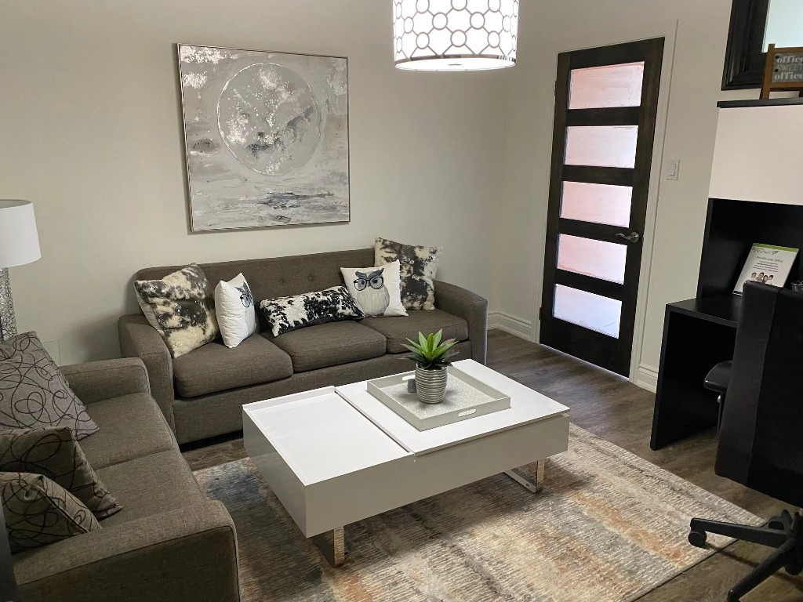

Helping families resolve parenting disputes.
Oakville · Greater Toronto Area
A steadier way through separation.
Stephen Cross works with families in Oakville and across the GTA who are separating or already separated. The work is practical, private, and centred on what children need.
- In person
- Video conference
- Telephone
The practice
Work built around separating families.
Separation is hard. Most people come here at one of the lowest points in family life. Mediation will not fix everything, but for many families it is a clearer and less costly path than court, and it keeps dignity intact for parents and children.
Stephen stays neutral. He does not decide for you. He helps you talk things through and land on terms you can actually live with.
About Stephen Cross“In mediation, you keep the final say. You control the process and the outcome.”
Services
How Stephen can help.
Whether you need a first parenting plan or help with a difficult, high conflict file, Stephen adjusts the work to your situation.
01
Family mediation
A voluntary process to negotiate your own agreement, rather than having an outcome imposed in court.
Learn more → 02Collaborative practice
Stephen serves as the family professional on a team committed to resolving matters without going to court.
Learn more → 03Streamline collaborative
Collaborative divorce with one agreed cost, known from the start through to signing.
Learn more → 04Parenting plans
Written plans for parenting time, decision making, and how children move between homes.
Learn more → 05Voice of the child
A neutral way to bring a child’s views, wishes, and preferences into the process.
Learn more → 06Parenting coordination
Help implementing a parenting plan or court order when conflict continues after the agreement.
Learn more → 07Reintegration counselling
Therapeutic work to reestablish contact when a child’s relationship with a parent has been disrupted.
Learn more → 08Assessments
Comprehensive parenting assessments for high conflict matters, including section 30 assessments.
Learn more → 09Parent coaching
Education and coaching, alone or together, through separation and the parenting that follows.
Learn more →Stephen also offers counselling, and financial mediation with a financial divorce specialist when that is needed.
Family mediation
What working together looks like.
Every service is different. Here is how mediation usually unfolds.
Individual meetings
Stephen meets with each of you separately first. He walks through how mediation works, listens, and checks whether the process is safe and appropriate.
Joint sessions
You meet together with ground rules in place. Issues get named. Options get explored. When it helps, children’s views can be part of the conversation.
A written agreement
If you reach agreement, Stephen drafts a memorandum and goes over it with you. Your lawyers can then turn it into a binding separation agreement.

Practical details
Meet in the way that works for your family.
You can meet in person at the Oakville office, by video, or by phone. Evening and weekend appointments are available.
Location
In Oakville
242 Kerr Street, Suite 2, Oakville, Ontario L6K 3B2. Stephen also works with families across the Greater Toronto Area and beyond.
Hours
Evenings & weekends
Appointments are offered after regular business hours and on weekends. Online meetings are available by Zoom.
Format
Three ways to meet
In person, by video conference, or by telephone. The cost of mediation is shared between the parties.
Contact the office for directions or to ask what setup would suit you.
Begin here
Start with a conversation.
Call or email. If you would rather not put details in writing, phone is fine.